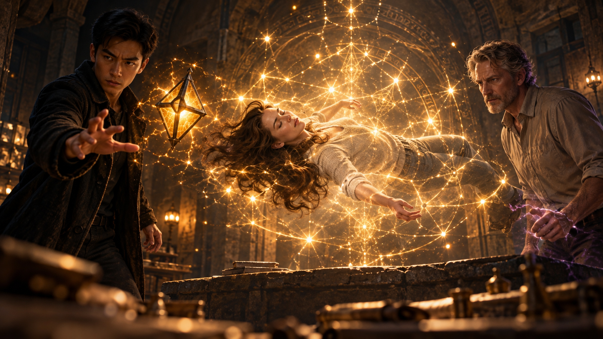

WHITE MAGIC ART STUDIO
第八章
星雷
美國・猶他州・鹽湖城・東湖地下教會
東湖地下教會的最深處，藏著一間不為多數人所知的密室。
那裡沒有窗戶，也沒有任何標示。唯有穿過一條狹窄的石砌走廊，才能找到隱藏在牆壁後方的入口。
厚重的石門緩緩關上，隔絕了外界的一切聲響。
房間不大。
沒有華麗的裝飾，也沒有複雜的儀器。
只有一名女子，靜靜漂浮在半空中。
瑞秋・安德烈。
她雙眼緊閉，長髮隨著周圍微弱的能量緩緩飄動，神情安詳得彷彿只是陷入一場漫長的沉睡。
一道極淡的金黃色雷光環繞著她。
那光芒並不像克里斯的雷電，呈現鮮明的翡翠綠色；也不像普通閃電那般耀眼刺目。
反而更像夜空中的星光。
柔和、安靜。
卻始終沒有熄滅。
傑西站在一旁，望著漂浮在空中的瑞秋，輕輕嘆了口氣。
「快一週了。」
雷沒有回答。
他只是靜靜注視著那道光芒。
十五年前，他曾經見過同樣的雷光。
那個時候，它屬於另一個人。
雷緩緩抬起右手。
「阿法。」
一道黑色菱形水晶從他身後浮現。
金屬結構沿著水晶邊緣逐一展開，細小的金色電流在表面緩緩流動。
隨著雷的手指微微移動，阿法逐漸靠近瑞秋。
一點。
再一點。
就在距離不到半尺時——
嗡。
一道金色波紋突然從瑞秋身上向外擴散。
阿法猛地停住。
雷的眼神瞬間一變。
下一秒——
轟！
金黃色的雷光驟然爆發！
強大的衝擊將阿法直接震飛，雷立刻抬手，讓術器重新回到掌中。

整間密室被耀眼的光芒照亮。
瑞秋周圍，無數細小的光點逐漸浮現。
它們宛如漂浮在夜空中的星辰，彼此之間以極細的雷絲相連。
那些光點開始移動。
排列。
交錯。
最後形成一圈又一圈複雜的符文，環繞著瑞秋緩緩旋轉。
傑西忍不住向前一步。
「這是……」
雷沒有回答。
他只是望著那些光芒。
許久之後，才低聲開口。
「星雷。」
傑西轉頭看向他。
雷的聲音比平常更加低沉。
「是詹姆斯。」
房間突然安靜下來。
唯有那些細小的金色光點，依舊圍繞著瑞秋緩緩流動。
「你確定？」傑西問。
「我看過太多次。」
雷抬起頭。
「不會認錯。」
他向前走了幾步。
這一次，他沒有再讓阿法靠近，而是隔著那層金色雷光，仔細觀察瑞秋的狀況。
忽然，他的目光停在瑞秋胸前。
「是項鍊。」
傑西順著他的視線看去。
一顆暖黃色的八角星水晶，正靜靜垂掛在瑞秋胸前。
水晶表面散發著微弱的光芒。
而每當那些金色符文經過，水晶便會隨之閃爍。
「詹姆斯把星雷留在了裡面。」
雷低聲說。
「只要瑞秋遇到足以威脅生命的危險，這道力量就會自行啟動，保護她。」
傑西皺起眉頭。
「可是……十五年？」
雷沒有回答。
因為這正是他想不通的地方。
聖術並不是永遠不會消耗的力量。
即使施術者死亡，預先留下的術式仍有可能持續存在。
但十五年後，竟然還能保有如此完整的力量？
甚至能夠直接將他的術器彈開？
這已經遠遠超出了普通封存術式應有的程度。
「你在想什麼？」傑西問。
雷沉默片刻。
「如果這真的是十五年前留下的力量……」
他再次看向瑞秋。
「那它未免太完整了。」
傑西沒有接話。
雷轉頭望向他。
「你確定詹姆斯死了？」
那句話落下的瞬間，密室裡的空氣彷彿突然沉重了幾分。
傑西沒有立刻回答。
雷的目光卻沒有移開。
「我問你....」
他的聲音依舊平靜，卻帶著不容迴避的追問。
「那天晚上之後你真的有....」
「是，15年來我也回答你同樣的答案，我有回去找到他的身體...」
雷沒有說話。
「並親手安葬了他。」
傑西望向瑞秋身上的星光，繼續說道：
「血祭封印只有在施術者真正死亡之後，才能完成。」
他停頓了一下。
「那一天，魔神消失了。小鎮恢復正常，封印也確實成立。」
雷握著阿法的手，慢慢收緊。
「那你告訴我……」
他看向瑞秋。
「這又是什麼？」
傑西望著那些金色光點。
許久之後，他無奈地搖了搖頭。
「我不知道。」
雷抬眼看他。
傑西苦笑了一下。
「別這樣看我。」
他輕輕嘆氣。
「我是真的不知道。」
兩人再次陷入沉默。
金色光點仍然靜靜漂浮在瑞秋身旁。
那柔和的光芒，像是十五年前某個人留下的承諾。
即使那個人早已不在。
它依然記得，自己應該守護誰。
＊
「還有一件事。」
傑西忽然轉身，走向房間角落的一張工作桌。
桌上放著一支手機，以及幾份剛整理好的文件。
「關於那個假鮑伯。」
雷轉頭看向他。
「克里斯從他的手機裡，救回了一段被刪除的資料。」
傑西抽出其中一張紙，遞到雷面前。
那是一份舊報紙的影印頁。
紙張已經泛黃，部分文字因為年代久遠而變得模糊。
雷低頭閱讀。
十五年前。
洛杉磯。
一個家庭。
一場被警方判定為集體死亡的案件。
報導中，還記錄了一段令人費解的文字。
我們願化為鑰匙，打開真神之門。
雷的目光停在「鑰匙」兩個字上。
「時間呢？」
「和魔神出現的那一天吻合。」
雷緩緩抬頭。
「所以這不是意外。」
「我也不認為是。」
「有人召喚了牠。」
傑西點頭。
「而十五年後，他們又回來了。」
雷沒有立刻回答。
他重新看向瑞秋。
金色雷光仍然靜靜環繞著她。
一段塵封已久的記憶，忽然浮現在腦海。
「詹姆斯當年說過……」
傑西的表情慢慢變了。
他知道雷接下來想說什麼。
「他會把那東西封印在自己體內。」
雷說。
「等柴克成為雷翼，再由他完成最後的壓制。」
房間再次陷入沉默。
雷低頭看著手裡的文件。
「如果封印出了問題呢？」
傑西沒有回答。
「如果柴克還沒準備好呢？」
傑西緩緩吐出一口氣。
「所以我一直希望……」
他走向工作桌旁的文件櫃，拉開最底層的抽屜。
「永遠不需要用到這個。」
一張泛黃的羊皮紙，被小心翼翼地放到桌上。
雷低頭看了一眼。
瞳孔微微收縮。
羊皮紙中央，繪著一把古老而修長的長劍。
劍身筆直，劍柄兩側展開六道宛如羽翼般的紋路。
整把劍的造型莊嚴而神祕，彷彿不屬於任何一個已知的時代。
圖案下方，只寫著幾個字。
安德烈之劍。
雷猛地抬頭。
「這不是傳說？」
「我花了十年，才確認它不是。」
傑西將羊皮紙翻到背面。
背面密密麻麻寫滿了古老文字，以及數張手繪地圖。
其中一個詞，被反覆標記。
Cordesala.
「寇德薩拉。」
雷低聲念出那個名字。
「存放著從遠古至今，各種傳說器物的聖地。」
傑西點頭。
「也是安德烈之劍最後一次被記載出現的地方。」
雷仔細看著地圖。
「你找到入口了？」
「我找到進入的方法了。」
「有差別嗎？」
「差很多。」
傑西指向其中一段古老文字。
「三個人。」
他的手指緩緩向下移動。
「三位一體的心志。」
「三道試煉。」
最後，他的手指停在一行特別標記的文字上。
「而且，三人之中至少必須有一位的『翼』聖術師。」
雷看著他。
兩人都明白，這句話意味著什麼。
「柴克。」
傑西沒有否認。
「如果真的走到那一步……」
他停頓片刻。
「是。」
雷沉默了一會兒。
「他才剛知道自己是聖術師。」
「我知道。」
「甚至還不會使用自己的力量。」
「我知道。」
雷低頭看著那張羊皮紙。
過了很久，才緩緩將它折起。
「那就希望我們還有時間。」
他轉身走向門口。
然而，走到一半時，腳步忽然停住。
「瑞秋的事。」
傑西抬頭。
「嗯？」
「柴克知道嗎？」
傑西沒有立刻回答。
雷轉過身。
「傑西。」
傑西無奈地嘆了口氣。
「他知道瑞秋目前很安全。」
他看了一眼半空中的女子。
「但還不知道她真正的狀況。」
雷的眼神沉了下來。
「克里斯和安娜都知道？」
「知道。」
「只有柴克不知道？」
傑西沉默片刻。
「我們只是希望，等狀況更明朗一點，再告訴他。」
「又瞞著他？」
雷的聲音很輕。
卻比任何責備都更加沉重。
傑西沒有回答。
雷重新看向瑞秋。
「他已經被所有人瞞了十五年。」
「我知道。」
「那就別再讓他成為最後一個知道真相的人。」
傑西看著他。
片刻後，忽然反問：
「那你呢？」
雷抬頭。
「你打算什麼時候告訴他詹姆斯的事？」
這一次，雷沒有立刻回答。
他站在原地，沉默了很久。
最後，才緩緩開口。
「我去詹姆斯家一趟。」
傑西微微皺眉。
「現在？」
「也許他在地下室裡，留下了其他關於星雷的記錄。」
雷看向瑞秋。
「如果能找到封存術式的線索，或許就能知道該怎麼解除她身上的力量。」
說完，他便轉身離開。
石門緩緩關上。
密室再次恢復安靜。
只剩下那些柔和的金色光點，依舊環繞著瑞秋緩緩流動。
傑西站在原地，望著那顆閃爍著微光的八角星水晶。
過了很久，他才低聲嘆息。
「詹姆斯啊……」
他無奈地搖頭。
「你就算死了，還是這麼麻煩。」
＊
鹽湖城・安德烈家
房子比雷記憶中更加安靜。
也更加殘破。
前門仍貼著警方的封鎖標誌，破損的窗戶透著冷風，客廳裡到處散落著前幾天戰鬥留下的碎片。
雷站在門口，靜靜望著眼前的景象。
十五年。
自從那件事發生之後，他便再也沒有以這樣的身分，走進過這棟房子。
如今重新踏入，迎接他的卻只剩下一片狼藉。
他沒有停留太久。
穿過客廳，直接走向地下室。
暗門開啟。
一段木製階梯向下延伸，消失在昏暗之中。
雷沿著階梯緩緩走下。
十五年沒有踏進這裡。
空氣中的味道卻幾乎沒有改變。
舊書。
木頭。
灰塵。
還有一絲淡淡的金屬氣味。
他停在最後一階。
沒有立刻向前。
這裡曾經是詹姆斯最喜歡待的地方。
也是雷最討厭來找他的地方。
因為只要詹姆斯開始研究某件事，就會完全忘記時間。
有時候，連吃飯都得靠人提醒。
雷不自覺地望向書房中央。
彷彿下一秒，那個熟悉的身影便會從書堆後面抬起頭，露下一臉毫無歉意的笑容。
然而，房間裡什麼都沒有。
雷收回目光，走進書房。
桌面依舊凌亂。
書櫃卻整理得十分整齊。
彷彿主人只是暫時離開，隨時都會回來繼續未完成的研究。
雷沿著書架慢慢尋找。
元素使天賦。
護身術。
封存術式。
任何可能留下答案的記錄，他都沒有放過。
但始終一無所獲。
直到他走到書桌前。
腳步忽然停住。
桌上放著一張照片。
照片裡，三個男人站在陽光下。
傑西。
雷。
還有詹姆斯。
雷伸手拿起相框。
照片中的詹姆斯笑得毫無防備，一隻手隨意搭在他的肩膀上，神情輕鬆得彷彿世上沒有任何事情值得煩惱。
雷靜靜看了很久。
「……你到底還藏了多少東西？」
他的聲音低得幾乎聽不見。
就在這時——
咯吱。
身後傳來木板被踩動的聲音。
雷瞬間轉身，右手亮起金色雷光。
「阿法！」
黑色菱形水晶從身後浮現，迅速展開。
樓梯上的腳步聲停住了。
「……抱歉。」
柴克站在暗門旁。
兩人對望了片刻。
雷收起雷光，眉頭卻沒有鬆開。
「你不該來這裡。」
「我知道。」
柴克有些尷尬地笑了笑。
「但我有很重要的東西得回來拿。」
雷沒有說話。
「而且傑西說你會在這裡，有你在應該很安全。」
柴克走下幾階樓梯。
「他還說，我們可以趁這個機會多認識彼此。」
雷微微一怔。
不久前，傑西的聲音彷彿又在耳邊響起。
『那你呢？你什麼時候要跟他說詹姆斯的事？』
雷翻了個白眼。
「……多管閒事。」
「什麼？」
「沒事。」
柴克走下最後一階。
雷正要開口，目光卻落在柴克懷裡。
一張相框。
照片裡的詹姆斯，笑得燦爛。
雷愣了一下，原來這就是柴克所說的『重要之物』
他低頭看向自己手中的照片。
三個年輕男人站在陽光下。
傑西、自己，還有詹姆斯。
柴克也注意到了。
「那張……」
雷抬眼。
「你看過？」
「前幾天第一次下來的時候。」
柴克走近，望著照片中的雷。
「那時候我還不知道你是誰。」
他仔細端詳了一會兒。
「現在看還是覺得很奇怪。」
雷挑眉。
「不是壞的意思！」
柴克連忙補充。
「只是……你跟我爸真的不像。」
「我們是同父異母。」
「克里斯有說。」
柴克看了看照片。
「你們以前感情很好嗎？」
雷沒有回答。
他將相框放回桌上，轉身走向書櫃。
「抱歉，我是不是問太多了？」
雷的手停在書脊上。
片刻後。
「他是我這輩子認識的人裡，最優秀的一個。」
柴克抬起頭。
雷抽出一本書。
「也最麻煩。」
柴克忍不住笑了。
他低頭看向懷裡的照片，拇指輕輕擦過相框邊緣。
「克里斯跟我說了。」
雷轉頭。
「這十五年，你一直都在附近。」
「嗯。」
「一直看著我們？」
「嗯。」
柴克沉默了一會兒。
「為什麼不出現？」
雷看向桌上的照片。
「因為沒有那個必要，只要做好我答應過你父親的事就好了。」
柴克望著他。
過了片刻，輕聲說：
「……謝謝你。」
雷沒有回頭。
「不用謝。」
柴克有些尷尬地笑了一下。
氣氛重新安靜下來。
兩個都不太知道該如何與對方相處的人，就這樣站在詹姆斯留下的地下書房裡。
此時雷彎下腰，從散落在地上的書籍中撿起一本黑色古籍。
柴克的表情瞬間變了。
「等等。」
雷回頭。
「那本書。」
柴克快步走近。
古籍的封面上，清楚寫著四個字。
《血祭封印》
柴克盯著那本書。
「我見過。」
雷的眼神立刻變得銳利。
「在哪？」
「那天早上。」
柴克指向書房中央。
「我第一次進來的時候。」
記憶迅速浮現。
黑色的人影。
那本書。
刺鼻的惡臭。
還有地板上的黑水。
「有人站在這裡。」
雷完全轉過身。
「誰？」
「不知道。」
柴克皺起眉頭。
「我看不清楚他的臉。」
他再次望向那本古籍。
「但他手裡拿的，就是這一本。」
「然後呢？」
「他好像發現我了。」
柴克努力回想當時的畫面。
「接著整個人……就融掉了。」
雷沒有說話。
「變成一灘黑水。」
雷的目光瞬間一沉。
假鮑伯。
黑水。
變形。
《血祭封印》。
幾條原本看似毫無關聯的線索，在他腦海中逐漸連接起來。
「他不是偶然闖進這裡的。」
雷低聲說。
柴克抬頭。
「什麼？」
「他在找這本書。」
雷握緊手中的古籍。
「或者……」
他的目光落在柴克身上。
「在找某個與封印有關的東西。」
柴克還來不及追問，雷便已經走向樓梯。
「那個巫師在哪裡攻擊你？」
「克里斯房間。」
「帶我去。」
＊
兩人回到一樓。
柴克才剛踏出地下室暗門，腳步便突然停住。
一股寒意，無預警地沿著背脊緩緩爬上來。
不是因為屋裡的冷風。
而是某種更加熟悉、更加令人不安的感覺。
這種感覺……
他今天早上才經歷過。
「等等。」
雷回過頭。
柴克沒有回答。
他的目光正緊緊盯著客廳中央。
破碎的家具之間，有某個東西正反射著微弱的光芒。
柴克慢慢走過去。
蹲下身。
當他終於看清那個物品時，整個人瞬間僵住。
「……不可能。」
那是一支深灰色的折疊手機。
外殼上有幾道熟悉的刮痕。
柴克認得。
他不可能認錯。
「……查德？」
柴克伸手將手機撿起。
指尖微微顫抖。
他翻開手機。
嗒。
螢幕亮起。
桌布上，是他與查德在冠軍賽後拍下的合照。
兩個人勾肩搭背，笑得像是剛贏得全世界。
柴克的臉色瞬間變得蒼白。
他立刻打開通話紀錄。
一通。
兩通。
全部都是打給自己的未接通電話。
時間……
就在今天早上。
柴克的呼吸猛地一滯。
夢。
破碎的客廳。
查德。
黑霧。
還有那支掉在地上的手機。
所有畫面，竟然和眼前的景象一模一樣。
「不……」
雷注意到他的異狀。
「怎麼了？」
柴克慢慢抬起頭。
「我看過。」
「什麼？」
「這個畫面。」
他的聲音開始顫抖。
「昨天早上。」
雷的表情變了。
「在哪？」
柴克看著他。
「夢裡。」
房間突然安靜下來。
柴克重新低頭望著手機。
「查德來過這裡。」
他終於明白。
那不是一場普通的夢。
至少——
那一部分不是。
「他被一團黑霧……」
「柴克。」
雷突然打斷他。
語氣完全變了。
「到我身後。」
柴克愣住。
「什麼？」
「現在。」
柴克還沒來得及反應——
客廳角落的陰影，突然動了。
雷一步擋在他面前。
「阿法！」
黑色菱形水晶瞬間展開。
金色雷光轟然亮起！
下一秒，一頭惡魔猛地從黑暗中撲出！
砰！
牠正面撞上雷電屏障，金色電弧瞬間沿著牠的身體竄動。
強大的衝擊將怪物狠狠震飛，撞翻了客廳裡僅存的家具。
柴克下意識向後退去。
然而，這一次，他沒有像之前那樣完全僵在原地。
他的目光迅速掃過四周。
出口。
距離。
雷的位置。
惡魔的位置。
就像克里斯剛剛教過他的。
先當柴克。
惡魔重新爬起。
雷沒有給牠再次攻擊的機會。
阿法飛回掌心。
他向前踏出一步，猛地揮拳！
轟！
金色雷霆沿著地面炸開。
強大的衝擊波正面擊中惡魔，連同牠身後的牆壁一起震出數道裂痕。
柴克立刻抬手，擋住飛散的灰塵。
就在這時，他忽然聽見另一個聲音。
左邊。
不是雷。
柴克猛地轉頭。
只見牆壁破口後方，竟然又有一頭惡魔緩緩爬了出來。
緊接著，是第二頭。
「雷叔叔！」
雷立刻回頭。
然而，其中一頭惡魔已經朝柴克撲去！
柴克迅速後退。
右手下意識摸向背後。
空的。
弓不在。
該死！
怪物越來越近。
雷猛地抬手。
阿法高速旋轉，一道金色屏障瞬間在柴克面前展開。
砰！
惡魔的利爪狠狠撞上雷光。
柴克被衝擊震得向後踉蹌。
還沒站穩，雷便已經出現在他身前。
沒有多餘的動作。
阿法懸浮在掌側。
一道壓縮到近乎白色的雷光，從雷的掌心猛然爆發！
轟！
怪物被直接掀飛。
另一頭惡魔趁機從側面衝來。
雷迅速轉身。
阿法展開。
數道金色光環瞬間射出，緊緊束縛住惡魔的四肢。
怪物不斷掙扎。
雷緩緩握拳。
光環同時收縮。
砰！
黑霧瞬間炸散。
「走。」
雷一把抓住柴克的手臂。
「去哪？」
「出去。」
「可是查德——」
「先活著。」
短短三個字。
柴克沒有再反駁。
兩人迅速衝向門口。
然而，就在他們即將踏出屋外時，身後突然傳來一聲巨響！
轟！
最後一頭惡魔撞破牆面，從屋內追了出來。
雷將柴克往前一推。
「跑！」
柴克衝進雪地。
冰冷的空氣迎面撲來。
背後，惡魔的嘶吼聲越來越近。
他下意識回頭。
只見怪物已經從破損的屋頂猛地躍下，朝他直撲而來！
太快了。
柴克甚至來不及閃躲。
下一秒——
一隻手突然攬住他的腰。
世界猛地向下墜去。
不。
不是向下。
是地面正在迅速遠離！
柴克睜大眼睛。
眼前的房子快速縮小，覆蓋著積雪的前院也越來越遠。
「什——」
狂風瞬間灌進嘴裡。
柴克立刻閉上嘴巴。
他這才發現，雷竟然帶著自己懸浮在半空中！
阿法高速旋轉。
一道單純的金色雷弧宛如鎖鏈，在兩人周圍交錯展開。
下方，惡魔撲了個空。
牠還沒來得及落地，雷便已經抬起另一隻手。
所有雷光瞬間向掌心集中。
轟——！
一道金色光柱猛然貫穿黑暗！
惡魔在雷光中崩散，化作無數黑色碎屑，緩緩落向雪地。
四周終於恢復安靜。
柴克一動也不敢動。
他低頭看去。
地面在很遠的下方。
再抬起頭。
雷的表情依舊平靜，彷彿剛才只是做了一件再普通不過的事。
柴克張了張嘴。
「……你會飛？」
雷看了他一眼。
沒有回答。
兩人開始緩緩下降。
直到鞋底重新踩上積雪，柴克才終於鬆了一口氣。
然而，他依舊盯著雷。
「你真的會飛。」
雷沒有理會他的驚嘆。
「你受傷了嗎？」
「沒有。」
雷仔細確認了一眼。
確定柴克真的沒事之後，才轉身看向眼前的房子。
柴克也跟著回頭。
那棟他從小長大的家，如今又多了好幾個破洞。
牆面佈滿焦痕。
窗戶幾乎全碎了。
原本熟悉的客廳，更是被破壞得面目全非。
柴克看了很久。
最後，幽幽地說：
「……我媽看到會殺了我們。」
雷沉默兩秒。
「主要是我。」
柴克忍不住笑了一下。
只有一下。
很快，他的目光便重新落在手裡。
查德的手機。
笑意瞬間消失。
雷也注意到了。
「那是你朋友？」
柴克點頭。
「他來找我。」
他的聲音很輕。
「然後……我夢到他被某種黑霧帶走。」
雷沒有說場景只是夢。
也沒有說你想太多。
他只是靜靜看著那支手機。
過了片刻，才低聲開口。
「先冷靜。」
雷看向柴克。
「我們先回教會。」
柴克點頭。
「……嗯。」
他握緊查德的手機。
另一隻手，仍然緊懷著父親的照片。
雷的目光落在那個相框上。
剛才一路逃命。
衝出房子。
甚至被帶上半空。
柴克始終沒有鬆開手。
雷沒有說什麼。
只是轉過身。
「走吧。」
柴克跟了上去。
兩人的腳步踩過積雪，在安靜的街道上留下兩道深淺不同的足跡。
柴克低頭望著手中的手機。
他不知道查德現在在哪裡。
也不知道那團黑霧究竟把他帶去了什麼地方。
但他已經無法再說服自己，那些夢境只是毫無意義的幻覺。
他想起迦勒的事，悲劇不能再發生。
他抬起頭，看向走在前方的雷。
這一次，他不想再只是等待別人告訴自己答案。
他要找到查德。
也要弄清楚，那些不斷出現在夢裡的黑暗，究竟想從他身上得到什麼。